게임개발타이쿤
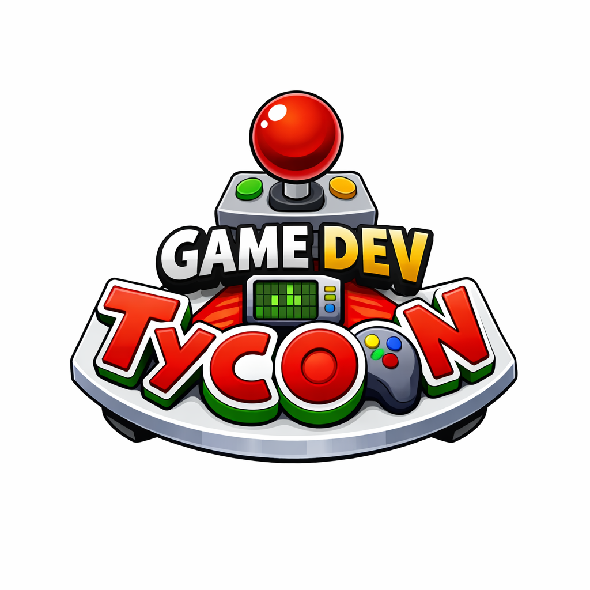
OVERVIEW
저희 팀은 게임엔진 사용없이, Java Swing만을 활용해서 완벽히 작동하는 게임 시스템을 만들고 싶었습니다. City Game Studio와 같은 게임 개발사 경영 시뮬레이션에서 영감을 받아 타이쿤 게임을 만들기로 했습니다.
플레이어는 제한된 초기 자본으로 회사를 설립하고 직원을 고용하며, 다양한 장르와 주제를 조합하여 게임을 개발합니다. 시장 반응을 기반으로 수익과 인지도를 확보하며 회사를 성장시키고, 파산을 피해야 합니다.
경제 시스템, 직원 관리, 개발 진행도, 아이템 배치 등 여러 시스템이 동시에 작동하는 경영 시뮬레이션 구조가 특징입니다.
저는 일련의 게임 시스템 구조를 설계하고, 그래픽 렌더링 구조와, 인터랙션 시스템을 중심으로 개발을 담당했습니다. 그리고 함께 협력하여 기술에 대한 문제를 논의 하고 해결하는 과정을 겪었습니다.
또한 모든 아트 에셋을 직접 제작했습니다.
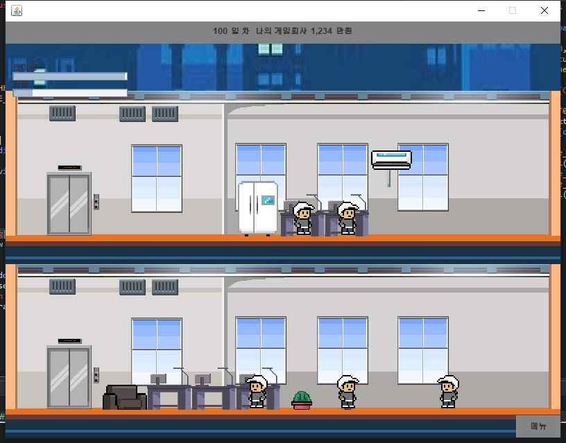
게임 디자인
초기에는 2.5D 형태의 사무실 표현을 목표로 했지만, Java Swing 기반 환경에서는 좌표 변환, 스프라이트 깊이 정렬, 클릭 판정과 같은 처리의 복잡도가 높아지는 문제가 있었습니다. 이에 따라 화면 구조를 보다 직관적인 2D 타이쿤 방식으로 재설계했고, 대신 아이템 배치, 직원 이동, 개발/운영 시스템의 완성도를 높이는 방향으로 프로젝트를 발전시켰습니다.
원래 하려했던 구조 예상도
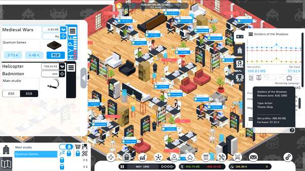
게임 내 오피스에 배치할 수 있는 가구와 소품 아이템들을 직접 제작했습니다. 64×64, 64×128 픽셀 규격의 빈 캔버스에서 책상, 소파, 냉장고, 게임기, 식물 등 다양한 에셋을 픽셀 스타일로 설계했습니다. 플레이어가 마우스로 배치할 수 있는 모든 오브젝트를 포함합니다.
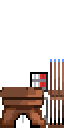
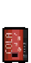
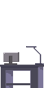
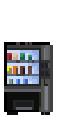
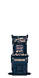
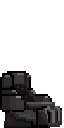
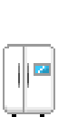
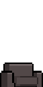
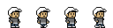
Java Swing을 통한 인터랙션
Java Swing의 MouseListener, ActionListener 등을 활용하여 마우스 클릭 이벤트를 화면 좌표로 수신하고, 이를 맵 데이터로 변환하여 오브젝트 배치 가능 여부를 판별했습니다. 상점, 인벤토리, 개발 진행 팝업 등 모든 UI 상호작용은 Swing 컴포넌트와 이벤트 핸들링으로 구현했습니다. 플레이어가 팝업을 조작하는 동안에도 백그라운드 스레드가 게임 상태를 갱신하므로, 멈춤 없는 실시간 시뮬레이션 경험이 유지됩니다.
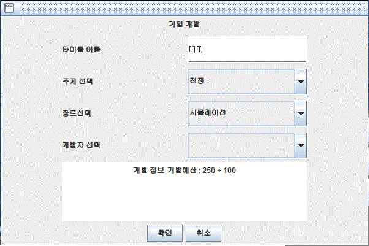
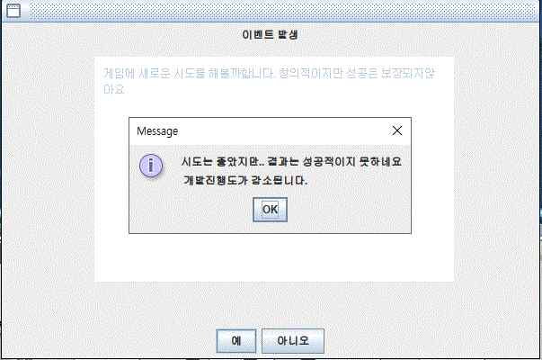
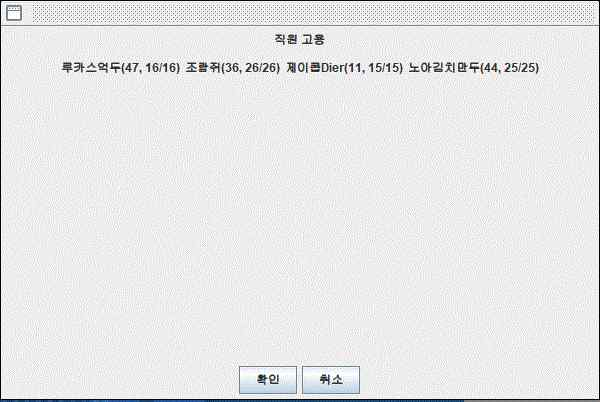
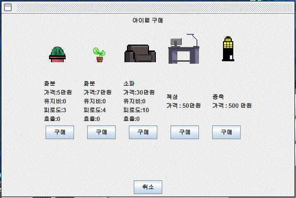
아래에서 게임 흐름을 확인하세요
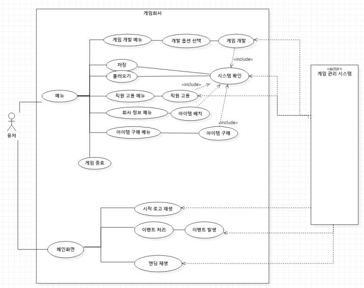
멀티스레드 도입 및 독립 AI 아키텍처
턴제 방식이 아닌 실시간으로 돌아가는 회사를 구현하기 위해 프로젝트 진행 중 처음으로 스레드(Thread) 개념을 접하고 이를 게임 루프에 적용해 나갔습니다.
하지만 여러 시스템이 동시에 작동하면서 구조가 복잡해졌기 때문에 단일 루프로는 관리하기 어려워졌습니다.
이 문제를 해결하기 위해 여러 방식을 고민했습니다. 이후 게임 상태 갱신을 담당하는 백그라운드 스레드를 별도로 두는 방식을 고안했습니다. 이방식은 시간 진행과 직원 상태 갱신을 분리하여 관리하고, 직원 객체가 Runnable 인터페이스를 구현하도록 설계하여 각 직원이 독립적인 스레드로 동작하도록 합니다다.
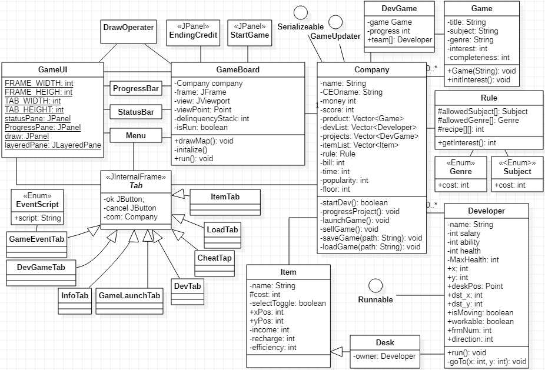
클래스 다이어그램 (객체지향 설계)
아이템 배치 및 공간 운영
저는 아이템을 맵 위에 직접 배치하도록 하고싶었습니다. 상점에서 구매 → 회사 정보에서 선택 → 사무실 맵 클릭으로 배치하는 흐름으로 진행되어서, Swing 기반이면서도 게임다운 조작감을 구현했습니다.
아이템은 장식이 아니라 휴식, 효율, 유지비 같은 수치에 영향을 주므로, 플레이어의 배치 선택이 직원 상태와 회사 운영에 직접 반영됩니다. 책상 구매와 층 확장 기능으로 회사 규모를 단계적으로 키울 수 있도록 설계하여, 공간 운영이 포함된 타이쿤 구조를 경험할 수 있게 했습니다.
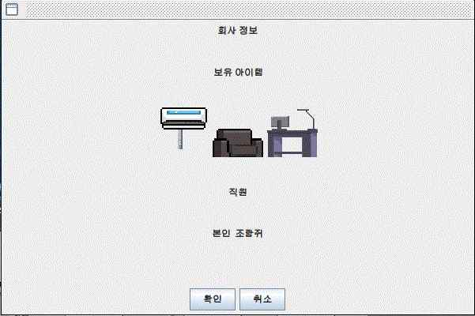
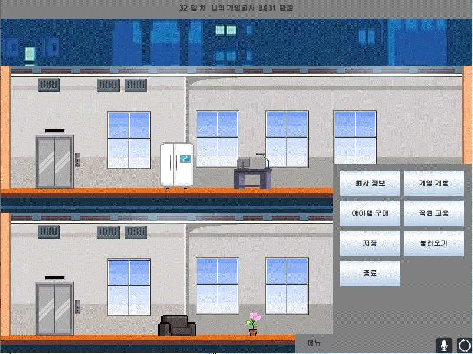
저는 아이템을 맵 위에 직접 배치하도록 하고싶었습니다. 상점에서 구매 → 회사 정보에서 선택 → 사무실 맵 클릭으로 배치하는 흐름으로 진행되어서, Swing 기반이면서도 게임다운 조작감을 구현했습니다.
아이템은 장식이 아니라 휴식, 효율, 유지비 같은 수치에 영향을 주므로, 플레이어의 배치 선택이 직원 상태와 회사 운영에 직접 반영됩니다. 책상 구매와 층 확장 기능으로 회사 규모를 단계적으로 키울 수 있도록 설계하여, 공간 운영이 포함된 타이쿤 구조를 경험할 수 있게 했습니다.


프로젝트 회고
이 프로젝트를 진행하는 동안에는 해결책이 명확히 정해져 있지 않은 개발 과정 속에서 다양한 아이디어를 빠르게 비교하고 실험하며 시스템을 발전시켰습니다.
작은 규모의 게임 엔진이 동작하는 핵심 원리를 경험할 수 있었기 때문에 매우 흥미로운 경험이었습니다.
특히 사용자가 팝업 메뉴를 조작하는 동안에도 게임 내부의 경제 시스템과 직원들의 행동 로직이 멈추지 않고 지속적으로 동작하도록 설계하여, UI와 독립적으로 작동하는 비동기 시뮬레이션 구조를 완성했습니다.
이 과정에서의 동기화 문제가 발생할 수 있음을 깨닫고 해결책에 대해 깊은 고민을 했습니다. '처리만 한군데에서 관리하면 어떨까?' 라고 생각했었고, 이런 아키텍처를 설계하는 것이 중요하다는 것을 깨달았습니다.